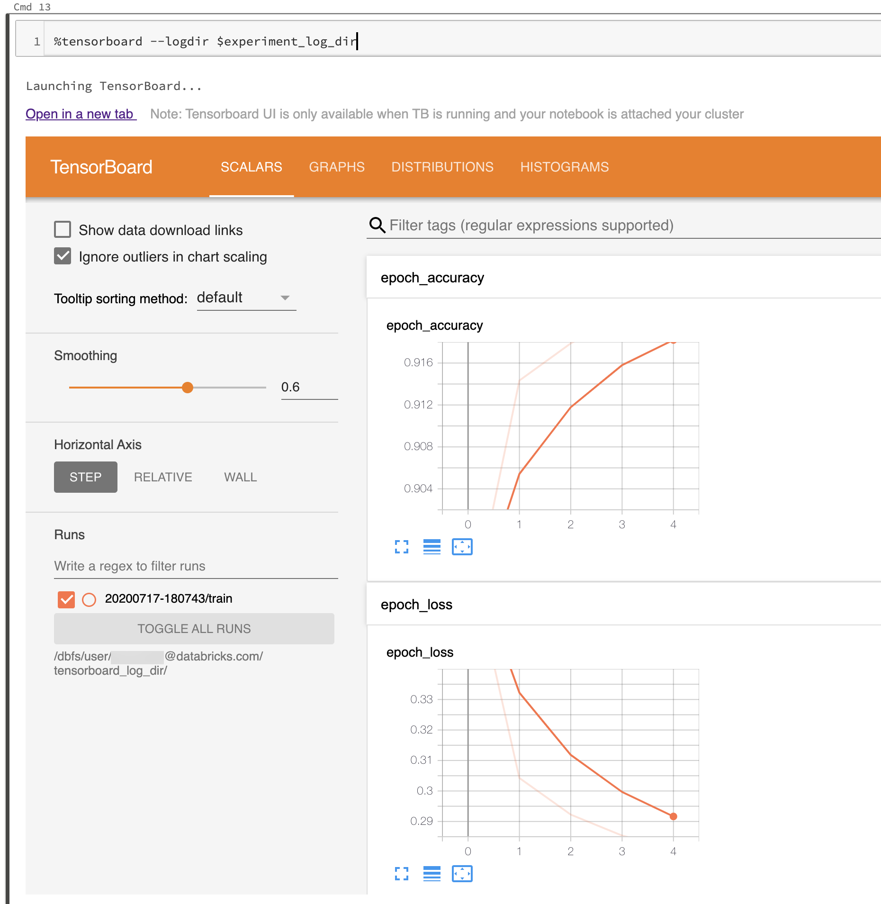

TensorBoard
TensorBoard is a suite of visualization tools for debugging, optimizing, and understanding TensorFlow, PyTorch, Hugging Face Transformers, and other machine learning programs.
Use TensorBoard
Starting TensorBoard in Databricks is no different than starting it on a Jupyter notebook on your local computer.
Load the
%tensorboardmagic command and define your log directory.%load_ext tensorboard experiment_log_dir = <log-directory>
Invoke the
%tensorboardmagic command.%tensorboard --logdir $experiment_log_dir
The TensorBoard server starts and displays the user interface inline in the notebook. It also provides a link to open TensorBoard in a new tab.
The following screenshot shows the TensorBoard UI started in a populated log directory.

You can also start TensorBoard by using TensorBoard’s notebook module directly.
from tensorboard import notebook
notebook.start("--logdir {}".format(experiment_log_dir))
TensorBoard logs and directories
TensorBoard visualizes your machine learning programs by reading logs generated by TensorBoard callbacks and functions in TensorBoard or PyTorch. To generate logs for other machine learning libraries, you can directly write logs using TensorFlow file writers (see Module: tf.summary for TensorFlow 2.x and see Module: tf.compat.v1.summary for the older API in TensorFlow 1.x ).
To make sure that your experiment logs are reliably stored, Databricks recommends writing logs to cloud storage rather than on the ephemeral cluster file system. For each experiment, start TensorBoard in a unique directory. For each run of your machine learning code in the experiment that generates logs, set the TensorBoard callback or file writer to write to a subdirectory of the experiment directory. That way, the data in the TensorBoard UI is separated into runs.
Read the official TensorBoard documentation to get started using TensorBoard to log information for your machine learning program.
Manage TensorBoard processes
The TensorBoard processes started within Databricks notebook are not terminated when the notebook is detached or the REPL is restarted (for example, when you clear the state of the notebook). To manually kill a TensorBoard process, send it a termination signal using %sh kill -15 pid. Improperly killed TensorBoard processes might corrupt notebook.list().
To list the TensorBoard servers currently running on your cluster, with their corresponding log directories and process IDs, run notebook.list() from the TensorBoard notebook module.
Known issues
The inline TensorBoard UI is inside an iframe. Browser security features prevent external links within the UI from working unless you open the link in a new tab.
The
--window_titleoption of TensorBoard is overridden on Databricks.By default, TensorBoard scans a port range for selecting a port to listen to. If there are too many TensorBoard processes running on the cluster, all ports in the port range might be unavailable. You can work around this limitation by specifying a port number with the
--portargument. The specified port should be between 6006 and 6106.For download links to work, you must open TensorBoard in a tab.
When using TensorBoard 1.15.0, the Projector tab is blank. As a workaround, to visit the projector page directly, you can replace
#projectorin the URL bydata/plugin/projector/projector_binary.html.TensorBoard 2.4.0 has a known issue that might affect TensorBoard rendering if upgraded.